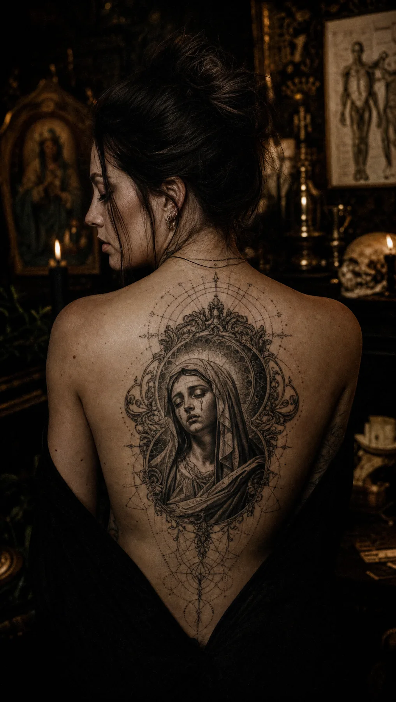

Drawn for the carrier
Bodies are not flat surfaces. Every line is composed for the muscle and movement underneath it. We sketch from a sitting, never from a stencil pulled off a shelf.
A private tattoo parlour
&
sacred portraiture studio
by Isaac Roque.

“ A piece worth carrying for fifty years is worth drawing for fifty hours. — I. R.
A tattoo is not a product. It is a relic — proof of a moment, a person, a promise. We treat each one as sacred. No walk-ins. No flash off a wall. Every piece is drawn for the body that will carry it.
Bodies are not flat surfaces. Every line is composed for the muscle and movement underneath it. We sketch from a sitting, never from a stencil pulled off a shelf.
Black and grey, dotwork, fine line — chosen because they survive. Decades, not seasons. We design for the photograph that gets taken in 2076.
Isaac sees one or two clients per day. The day is yours. Consultations are unhurried. The chair is private. There is no music selected for you.
We do not chase the algorithm. The work is built for the room it is finished in, not the screen it is posted to. Quiet hands. Loud results.
Isaac Roque has been hand-drawing faces since long before they ended up on skin. He builds his work the way iconographers built saints — slow, contemplative, in graphite first.
Reliquary opens with a single chair. Black and grey realism, fine line, dotwork ornament, and Baroque-leaning portraiture are the house language. The work is moody on purpose. It is meant to be looked at over a lifetime, not a feed.
A private collection of recent pieces. Click a relic to read its inscription.
Submit a private intake — what the piece is for, where on the body, what photographs and references live in your head. Brevity welcome. Voice notes welcome. There are no wrong answers.
Isaac builds the work from a blank page. Two private rounds of revisions. You see the piece on your body — pencil over photographs of you — before any needle is loaded.
One client per day. The chair is yours. Sittings range from three hours for ornament to full days for chest, sleeve, or back. Tea, water, blanket, silence — provided.
Aftercare instructions, a printed plate of the original drawing, and a follow-up sitting four to eight weeks later for any touch-ups. The piece is now a relic.
By appointment, in the West Central
neighbourhood of Fort Wayne, Indiana.
Address shared on confirmation.
Tuesday — Saturday
Noon · until · Late
Closed Sunday & Monday for drawing.
isaac@reliquary.studio
Replies within 48 hours · weekdays.
@isaacroque_tattoo
Most recent work. Stories Mon · Wed · Fri.
The chair is open by application. Tell us what the piece is for. We respond personally within two working days.